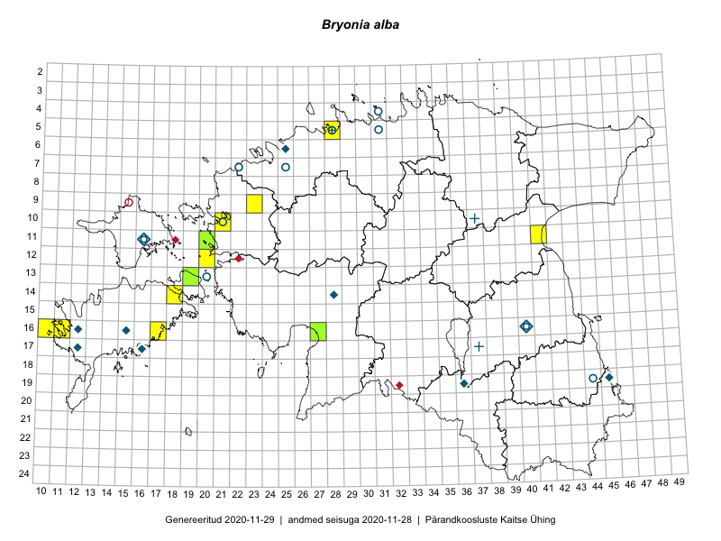

Bryonia alba
Uuendatud: 2016-12-07
Kaardile koondatud taksonid: Bryonia alba L.

Kaart põhineb 11 vaatlusel. Taime on leitud 6 ruudust.
| Ruut | Vaatleja(d) | Vaatlusaeg | Kirje tüüp | Viide andmebaasikirjele |
|---|---|---|---|---|
| 12-20 | Ott Luuk | 2014-07-25 | punkt | vaata PlutoFis |
| 16-10 | Toomas Kukk | 2014-06-21 | ruut/ala | vaata PlutoFis |
| 16-10 | Toomas Kukk | 2014-06-22 | punkt | vaata PlutoFis |
| 16-11 | Mari Reitalu | 2015-05-22 | ruut/ala | vaata PlutoFis |
| 16-11 | Mari Reitalu | 2015-06-22 | punkt | vaata PlutoFis |
| 16-11 | Triin Reitalu, Mari Reitalu | 2015-08-09 | ruut/ala | vaata PlutoFis |
| 16-11 | Triin Reitalu, Mari Reitalu | 2015-08-09 | punkt | vaata PlutoFis |
| 13-19 | Kadri Tali | 2015-06-03 | ruut/ala | vaata PlutoFis |
| 16-11 | Mari Reitalu, Triin Reitalu | 2015-08-09 | ruut/ala | vaata PlutoFis |
| 10-21 | Tõnu Ploompuu | 2015-08-21 | ruut/ala | vaata PlutoFis |
| 16-27 | Indrek Tammekänd, Eike Vunk | 2016-08-24 | punkt | vaata PlutoFis |